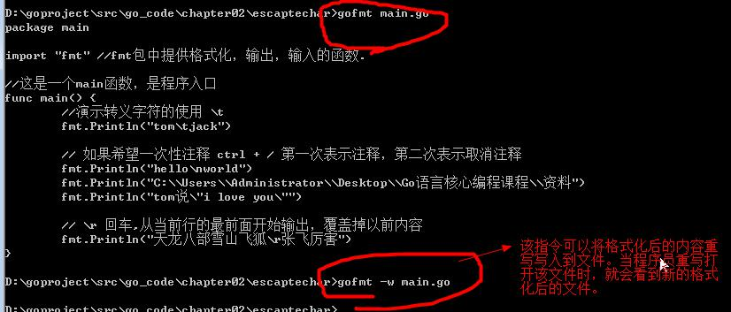
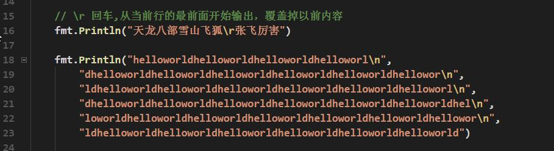

Go 规范的代码风格&语言的转义字符(escape char)
说明:常用的转义字符有如下
1) \t : 表示一个制表符，通常使用它可以排版。尚硅谷 Go 语言课程

2) \n ：换行符
3) \
：一个\
4) \" ：一个"
5) \r
：一个回车 fmt.Println("天龙八部雪山飞狐\r 张飞");
6) 案例截图

规范的代码风格
2.12.1 正确的注释和注释风格：
1) Go 官方推荐使用行注释来注释整个方法和语句。
2) 带看 Go 源码
2.12.2 正确的缩进和空白
1) 使用一次 tab 操作，实现缩进,默认整体向右边移动，时候用 shift+tab 整体向左移
看老师的演示：
2) 或者使用 gofmt 来进行格式化 [演示]

3) 运算符两边习惯性各加一个空格。比如：2 + 4 * 5。
4) Go 语言的代码风格.
package main
import "fmt"
func main() {
fmt.Println("hello,world!")
}
上面的写法是正确的.
package main
import "fmt"
func main()
{
fmt.Println("hello,world!")
}
上面的写法不是正确，Go 语言不允许这样编写。 【Go 语言不允许这样写，是错误的！】
Go 设计者思想: 一个问题尽量只有一个解决方法
5) 一行最长不超过 80 个字符，超过的请使用换行展示，尽量保持格式优雅
举例说明
